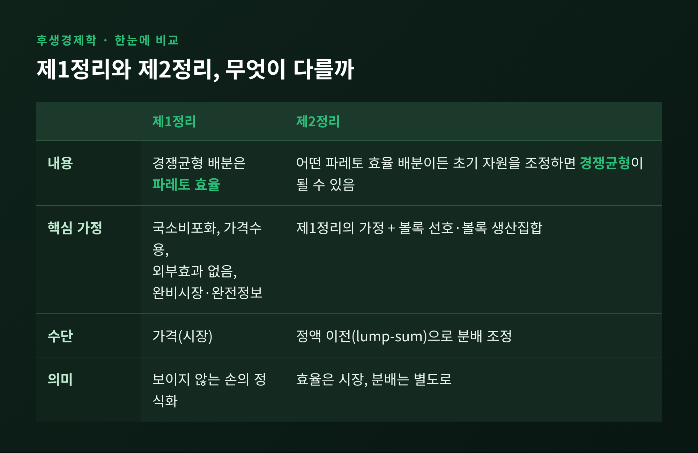
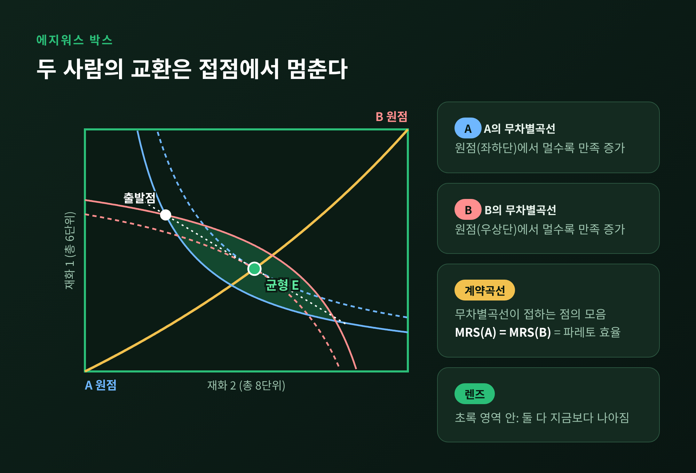
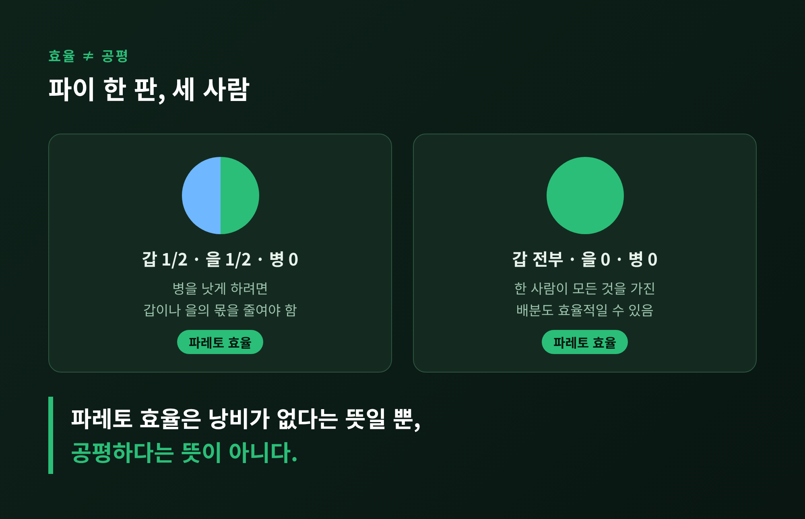
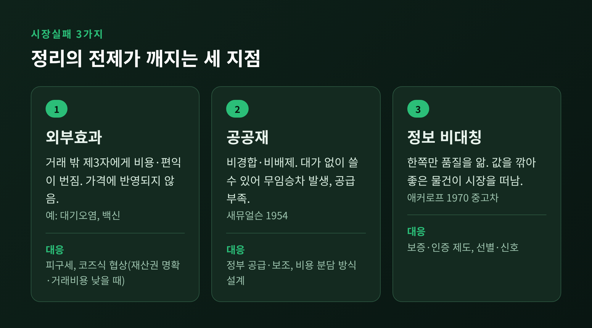
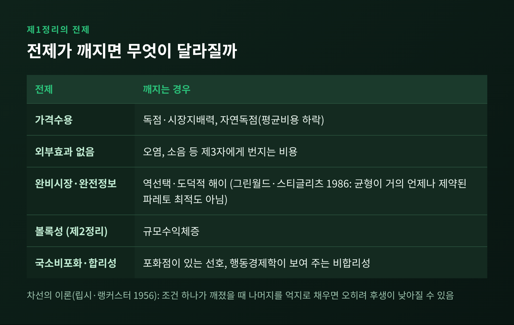

[경제] 파레토 효율과 에지워스 박스로 읽는 시장의 효율과 한계
이번 글에서는 후생경제학의 제1·제2 기본정리를 정리해 보겠습니다. 결론부터 말씀드리면 이렇습니다. 완전경쟁 시장의 균형은 파레토 효율입니다. 다만 이 명제는 외부효과, 공공재, 정보 비대칭이 없다는 전제 위에서만 성립하며, 공평까지 보장하지는 않습니다.

한 사람을 더 낫게 하려면 다른 누군가를 반드시 더 나쁘게 해야 하는 상태. 이를 파레토 효율이라 부릅니다. 반대로 아무도 손해 보지 않으면서 한 사람이라도 나아지는 변화는 파레토 개선입니다. 개선의 여지가 남아 있는 한 그 배분은 효율적이지 않습니다.
이 개념은 개인 간 효용을 서로 비교하거나 합산하지 않는다는 점이 특징입니다. 누구의 만족이 더 큰지 따지지 않고, 모두에게 득이 되는 낭비만 걸러냅니다. 이름은 이탈리아의 경제학자 빌프레도 파레토(1848~1923)에서 왔습니다.
효율적인 배분은 하나가 아닙니다. 여러 개가 존재하고, 대부분의 상태는 효율적이지 않습니다. 그래서 '최적'이라는 번역어가 하나의 정답이 있는 듯한 오해를 준다는 지적도 있습니다.
두 사람과 두 재화만 있는 경제를 상자 하나로 그릴 수 있습니다. 이것이 에지워스 박스입니다. 상자의 가로와 세로는 각 재화의 총량이고, 상자 안의 점 하나는 총량을 둘이 나누는 한 가지 방법입니다. A의 소비량은 왼쪽 아래 모서리에서, B의 소비량은 오른쪽 위 모서리에서 잽니다.
한 강의 예시를 보겠습니다. 재화 1이 총 6단위, 재화 2가 총 8단위입니다. A가 (3, 2)를 가지면 B는 자동으로 (3, 6)을 갖게 됩니다.

핵심은 두 사람의 무차별곡선입니다. 현재 배분에서 두 곡선이 서로 교차하면, 두 곡선이 겹치는 렌즈 모양 영역이 생깁니다. 그 안의 어느 점이든 두 사람 모두 지금보다 낫습니다. 교환할 이유가 남아 있다는 뜻입니다.
곡선이 서로 접하는 지점에서 교환은 멈춥니다. 이때 두 사람의 한계대체율(MRS), 즉 한 재화를 포기하는 대가로 다른 재화를 얼마나 원하는지가 같아집니다. 이런 접점을 모두 이은 선이 계약곡선이며, 곧 파레토 효율인 배분의 집합입니다. 참고로 교과서에 따라 계약곡선을 '출발점보다 양쪽 모두 나쁘지 않은 부분'으로 좁혀 부르기도 합니다.
이 그림은 처음에는 두 축뿐이었습니다. 에지워스가 1881년 『수리심리학』에서 선보였고, 1906년 파레토가 지금의 상자 모양으로 발전시켰습니다. 시장에서는 가격이 이 곡선으로 이끄는 역할을 합니다. 두 사람이 같은 가격비를 보고 각자 선택하면, 두 사람의 MRS는 모두 그 가격비와 같아지고 서로도 같아집니다. 균형이 계약곡선 밖에 있었다면 둘 다 더 나아질 수 있었을 테니, 그 점은 애초에 균형이 될 수 없습니다. 이것이 제1정리의 직관입니다.
제1정리는 이렇게 요약됩니다. 완전경쟁, 완비시장, 완전정보 아래에서 경쟁균형 배분은 파레토 효율입니다. 애덤 스미스의 '보이지 않는 손'을 수학으로 옮긴 진술로 읽힙니다. 필요한 가정은 많지 않습니다. 소비자가 더 많이 가질수록 낫다고 느끼는 국소비포화, 모두가 가격을 주어진 것으로 받아들이는 가격수용, 외부효과가 없을 것 정도입니다. 선호나 기술이 볼록할 필요도 없습니다.
제2정리는 방향이 반대입니다. 어떤 파레토 효율 배분이든, 초기 자원을 적절히 나눠 주기만 하면 경쟁균형으로 만들 수 있다는 것입니다. 원하는 효율점의 가격선 위로 초기 부존을 옮겨 놓고 시장에 맡기면 그 점에서 균형이 이뤄집니다. 대신 요구 조건이 훨씬 까다롭습니다. 선호와 생산집합이 모두 볼록해야 하고, 증명 과정에서는 양(+)의 초기 부존과 연속적인 선호가 필요합니다.
이 정리의 역사는 길습니다. 1906년 파레토가 『Manuale』에서 제1정리를 서술했고, 1947년 새뮤얼슨이 정액세와 정액 보조금을 통한 재분배라는 현대적 형태의 제2정리에 다가갔습니다. 이후 1951년 애로의 논문이 집합론과 실해석으로 두 정리를 엄밀하게 다듬었습니다. 다만 1951년의 저자를 놓고 소스마다 서술이 다릅니다. 어떤 자료는 애로와 드브뢰가 거의 동시에 발표했다고 하고, 다른 자료는 애로 단독 논문이며 드브뢰와의 공저는 1954년 균형 존재 증명이라고 설명합니다. 이 글에서는 후자를 중심으로 적습니다.
제1정리가 보장하는 것은 낭비가 없다는 사실뿐입니다. 한 사람이 모든 것을 갖고 나머지는 빈손인 배분도 파레토 효율일 수 있습니다. 파이를 두 사람이 반씩 나누고 세 번째 사람에게 한 조각도 주지 않아도, 그를 낫게 하려면 다른 이의 몫을 줄여야 하므로 효율적입니다.

제2정리는 이 틈을 메우는 듯 보입니다. 효율은 시장에 맡기고, 분배는 정액 이전으로 정하자는 분업입니다. 정액 이전은 유인을 왜곡하지 않는 거의 유일한 구매력 이전 방식입니다. 그러나 현실의 정부는 개인별 정보를 갖지 못해 유인을 흩뜨리지 않고 정액 이전을 하기 어렵습니다. 경제학자 마크 블로그(2007)는 응용 연구에서 제2정리의 실용성을 '동화'에 가깝다고 평가하기도 했습니다.
이론 안에서도 한계는 분명합니다. 애로의 불가능성 정리는 보편성, 파레토 일관성, 독립성, 비독재를 모두 만족하는 사회후생함수가 없음을 보였습니다. 개인의 선호를 합쳐 공평한 기준을 만드는 논리적으로 흠 없는 방법은 없다는 뜻입니다. 효율이 같다고 해서 어느 배분이 더 바람직한지까지 답해 주지는 않습니다.
시장실패는 자유로운 시장 배분이 파레토 효율이 아닌 경우를 가리킵니다. 대부분 제1정리의 가정이 깨지면서 일어납니다.

외부효과는 거래 당사자가 아닌 제3자에게 비용이나 편익이 번지는 경우입니다. 대기오염과 소음이 부정적 사례이고, 백신과 교육이 긍정적 사례입니다. 가격에 이 비용이 담기지 않으니 시장은 과다 생산하거나 과소 생산합니다. 피구는 한계외부비용만큼 세금을 매기자고 했고, 코즈는 1960년 「사회적 비용의 문제」에서 재산권이 명확하고 거래비용이 거의 없다면 협상만으로도 효율에 도달한다고 보았습니다. 단, 당사자가 많아질수록 무임승차와 버티기가 생기고, 코즈 자신도 거래비용을 큰 장애물로 보았습니다.
공공재는 비경합적이고 비배제적인 재화입니다. 새뮤얼슨이 1954년 「공공지출의 순수이론」에서 이 개념을 정식화했습니다. 대가를 내지 않은 사람도 쓸 수 있으니 누구나 남이 내주기를 기다립니다. 공급이 부족해지는 무임승차 문제입니다.
정보 비대칭은 한쪽만 품질을 아는 상황입니다. 애커로프는 1970년 「레몬 시장」에서 중고차를 예로 들었습니다. 구매자는 불량품일 위험 때문에 값을 깎고, 좋은 차의 주인은 그 값에 팔지 않습니다. 이득이 되는 거래가 사라집니다. 다만 애커로프는 보증 같은 제도가 문제를 줄일 수 있으므로 정부 개입이 곧 정답은 아니라고 보았습니다. 그와 스펜스, 스티글리츠는 이 분석으로 2001년 노벨 경제학상을 공동 수상했습니다.
정리를 현실에 쓰려면 어떤 전제가 필요한지 따져 보아야 합니다.

여기에 한 가지가 더 있습니다. 1956년 립시와 랭커스터의 차선 이론에 따르면, 최적 조건 하나가 충족될 수 없을 때 나머지 조건을 억지로 채우는 것이 오히려 후생을 낮출 수 있습니다. 시장을 완전경쟁에 가깝게 만든다는 방향이 늘 옳지는 않다는 경고입니다.
정리하면 이렇습니다.
제1정리는 시장이 어떤 조건에서 낭비 없는 배분을 만들어 내는지 알려 주는 기준선입니다. 제2정리는 효율과 분배를 나눠서 생각할 수 있다는 가능성을 보여 줍니다. 그러나 둘 다 현실의 시장을 그대로 설명하지는 않습니다.
"정리는 시장이 옳다는 선언이 아니라, 시장이 어디서 틀어지는지 찾는 지도입니다."
외부효과와 공공재, 정보의 격차가 눈에 들어오기 시작했다면, 이 정리를 제대로 읽으신 것이라고 생각합니다.